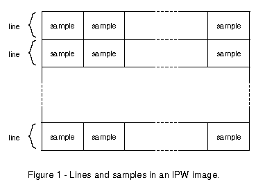
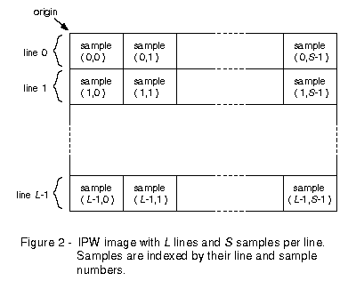

An IPW image represents a rectangular region divided into equally-size units called samples (figure 1). The samples are grouped into a series of lines, each containing the same number of samples.

The origin of an IPW image is the upperleft corner. Therefore, lines are numbered from top to bottom, and samples are numbered from left to right. Since the line and sample numbers actually represent offsets from the top and left edges of the image, respectively, the numbering starts at 0 instead of 1 (see figure 2). For example, the first line of an image is referred to as line 0. Similarly, the first sample of a line is referred to as sample 0.
Each sample in an IPW image is uniquely referenced or indexed by an ordered pair consisting of its line and sample numbers.
